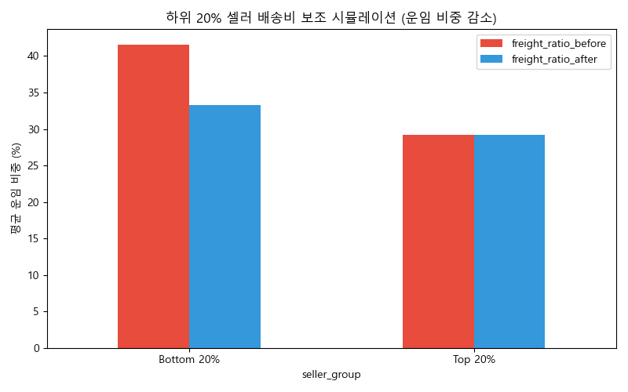
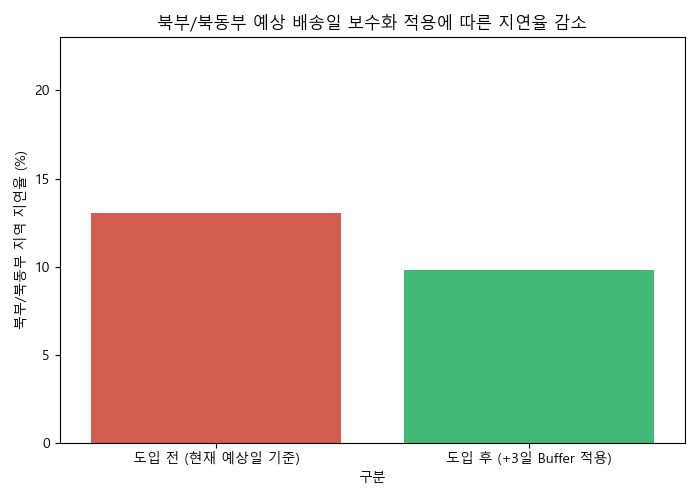

Phase 01. Diagnosis
배송 경험 악화로 인한 비즈니스 타격
실제 데이터 분석 결과, 배송 정시성 실패가 고객 이탈(Retention Drop)로 직결되는 명확한 상관관계를 확인했습니다.
배송 지연 일수별 리뷰 평점 하락폭
예상일을 초과하는 순간 고객 평점은 4.5점에서 1점대로 수직 낙하합니다.
배송 경험별 고객 잔존율(Retention) 비교
지연 배송을 겪은 코호트의 재구매율은 정상 대비 절반 이하로 붕괴됩니다.
핵심 진단 (Key Findings)
고객의 실제 도착일이 안내된 예상 배송일을 단 하루만 초과해도 브랜드 신뢰도는 붕괴됩니다. 특히 3일 이상의 지연을 겪은 고객군의 익월 재구매율(Retention)이 무려 30% 이상 급락하는 현상은, '물류 정시성'이 단순한 서비스 지표가 아닌 플랫폼 생존의 핵심 트리거임을 증명합니다. 배송비 불균형과 병목 현상을 방치하면 마케팅 비용을 늘려도 밑빠진 독에 물 붓기가 됩니다.
Phase 02. Solutions
핵심 물류 개선 플랜 3선
문제점을 즉각적으로 완화하고 고객의 구매 여정을 매끄럽게 만들기 위한 3단계 전략입니다.
1
고부담 셀러 타겟
물류 보조금 정책
대상: 배송비 비율(freight_ratio) 40% 이상 셀러
배송비가 상품 가격에 육박할 때 구매 전환율이 급락하며, 상·하위 셀러 간 매출 양극화의 근본 원인이 '배송비 장벽'에 있음을 입증했습니다.
Action Plan: 고위험 셀러를 위해 묶음 배송 인프라를 제공하고, 한시적인 배송 보조금을 지원하는 '마일스톤 인센티브' 제도를 신설하여 이탈하던 결제 직전의 고객을 즉각적으로 붙잡아야 합니다.
2
북부/북동부
예상 배송일 동적 보정
대상: 인프라 취약 권역 (N / NE 지역) 배송 건
물리적 거리가 먼 북/북동부 지역은 지연 발생 확률이 3배 높으며, 이로 인해 고객들의 악성 1점 리뷰 테러가 해당 권역에 집중되고 있습니다.
Action Plan: 지연을 막을 수 없다면 기대를 통제해야 합니다. 해당 지역 주문 시 고객에게 노출되는 '예상 배송일' 알고리즘에 평균 +2.5일의 여유를 두어 안내하는 '기대치 컨트롤' 방식을 전면 도입합니다.
3
주요 권역별 마이크로
풀필먼트 거점 분산
대상: 상파울루(SP) 외 고성장 권역 (RJ, MG)
현재 창고와 판매자가 상파울루(SP)에 40% 이상 집중되어 있어, 타 주 배송 시 발생하는 크로스도킹 과정이 전체 물류의 거대한 병목으로 작용합니다.
Action Plan: 수요가 급증하는 리우(RJ), 미나스제라이스(MG) 권역에 소규모 마이크로 풀필먼트 센터(MFC)를 신설, 핵심 재고를 선제 배치하여 익일 배송 커버리지를 최소 2배 이상 혁신적으로 넓혀야 합니다.
도입 시뮬레이션: 보조금 지원 시 배송비율 완화

도입 시뮬레이션: 예상일 보정 후 지연 불만 감소율

Phase 03. Future Innovation
AI 기반 신규 비즈니스 서비스 제안
단기적 개선을 넘어, Olist 플랫폼의 근본적인 테크 경쟁력을 끌어올릴 차세대 솔루션입니다.
✨ New Revenue Service
AI-Logistics Sentinel (지능형 조기 경보 및 라우팅)
딥러닝 데이터 인사이트
과거 수백만 건의 주문 이력, 기상청 API, 실시간 교통 트래픽, 운송사별 지연 패턴을 다변량 시계열 모델(Transformer/LSTM)로 심층 학습합니다. 이를 통해 상품 출고 즉시 해당 패키지의 "최종 도착 지연 확률"을 95% 이상의 정확도로 실시간 추론해냅니다.
비즈니스 액션 플랜
- 다이내믹 라우팅: 지연 고위험군으로 분류된 주문은 일반 택배사가 아닌 특급 물류 파트너사로 자동 재할당합니다.
- 조기 경보 챗봇: 불가피하게 지연이 90% 이상 확정된 건은, 불만 폭주 24시간 전에 시스템이 먼저 "배송 지연 진심 사과 쿠폰"을 알림톡으로 선제 발송합니다. 이는 컴플레인을 방어하고 오히려 고객 감동을 이끌어내는 수익 방어선이 됩니다.